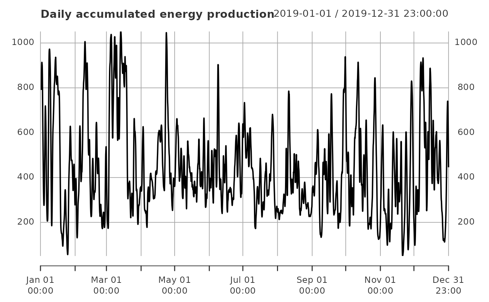
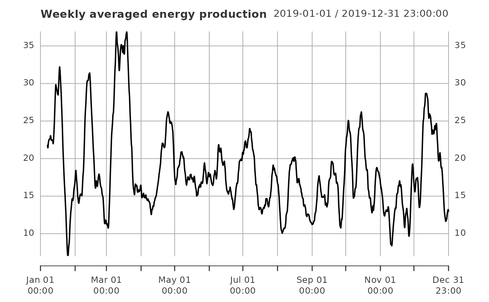

Inputs an xts time series and outputs an xts time series whose values have been aggregated over a moving window of a user-specified length.
Arguments
- x
xts object to be aggregated.
- agg_period
length of the aggregation period.
- agg_scale
timescale of
agg_period; one of'mins','hours','days','weeks','months','years'.- agg_fun
string specifying the function used to aggregate the data over the aggregation period, default is
'sum'.- timescale
timescale of the data; one of
'mins','hours','days','weeks','months','years'.- na_thres
threshold for the percentage of NA values allowed in the aggregation period; default is 10%.
Details
This has been adapted from code available at https://github.com/WillemMaetens/standaRdized.
Given a vector \(x_{1}, x_{2}, \dots\), the function aggregate_xts calculates
aggregated values \(\tilde{x}_{1}, \tilde{x}_{2}, \dots\) as
$$\tilde{x}_{t} = f(x_{t}, x_{t-1}, \dots, x_{t - k + 1}),$$
for each time point \(t = k, k + 1, \dots\), where \(k\) (agg_period) is the number
of time units (agg_scale) over which to aggregate the time series (x),
and \(f\) (agg_fun) is the function used to perform the aggregation.
The first \(k - 1\) values of the aggregated time series are returned as NA.
By default, agg_fun = "sum", meaning the aggregation results in accumulations over the
aggregation period:
$$\tilde{x}_{t} = \sum_{k=1}^{K} x_{t - k + 1}.$$
Alternative functions can also be used. For example, specifying
agg_fun = "mean" returns the mean over the aggregation period,
$$\tilde{x}_{t} = \frac{1}{K} \sum_{k=1}^{K} x_{t - k + 1},$$
while agg_fun = "max" returns the maximum over the aggregation period,
$$\tilde{x}_{t} = \text{max}(\{x_{t}, x_{t-1}, \dots, x_{t - k + 1}\}).$$
agg_period is a single numeric value specifying over how many time units the
data x is to be aggregated. By default, agg_period is assumed to correspond
to a number of days, but this can also be specified manually using the argument
agg_scale. timescale is the timescale of the input data x.
By default, this is also assumed to be "days".
Since the time series x aggregates data over the aggregation period, problems
may arise when x contains missing values. For example, if interest is
on daily accumulations, but 50% of the values in the aggregation period are missing,
the accumulation over this aggregation period will not be accurate.
This can be controlled using the argument na_thres.
na_thres specifies the percentage of NA values in the aggregation period
before a NA value is returned. i.e. the proportion of values that are allowed
to be missing. The default is na_thres = 10.
Examples
# \donttest{
data(data_supply, package = "SEI")
# consider hourly German energy production data in 2019
supply_de <- subset(data_supply, country == "Germany", select = c("date", "PWS"))
supply_de <- xts::xts(supply_de$PWS, order.by = supply_de$date)
# daily accumulations
supply_de_daily <- aggregate_xts(supply_de, timescale = "hours")
# weekly means
supply_de_weekly <- aggregate_xts(supply_de, agg_scale = "weeks",
agg_fun = "mean", timescale = "hours")
plot(supply_de, main = "Hourly energy production")
plot(supply_de_daily, main = "Daily accumulated energy production")

plot(supply_de_weekly, main = "Weekly averaged energy production")

# }